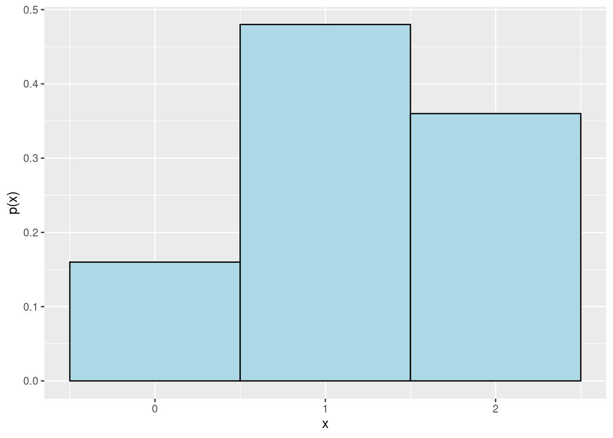

R Code for JB Statistics Video Lessonlibrary(tidyverse)
library(data.tree)
library(knitr)
library(kableExtra)We can visualize the various possible outcomes with a tree diagram. The middle two levels represent Baby 1 and Baby 2. At each step there are two choices, leading to four possible outcomes when we take the order of selection into account.
babies <- Node$new("Select Two Babies")
branch1 <- babies$AddChild("Jaundice")
branch11 <- branch1$AddChild("Jaundice")
JJ <- branch11$AddChild("JJ")
branch12 <- branch1$AddChild("No Jaundice")
JN <- branch12$AddChild("JN")
branch2 <- babies$AddChild("No Jaundice")
branch21 <- branch2$AddChild("Jaundice")
NJ <- branch21$AddChild("NJ")
branch22 <- branch2$AddChild("No Jaundice")
NN <- branch22$AddChild("NN")
SetGraphStyle(babies, rankdir = "TB")
SetNodeStyle(babies,
style = "filled, rounded",
shape = "box",
fillcolor = "lightblue",
fontcolor = "black")plot(babies)If our two choices are random and independent, then we can find the probability of each of the four outcomes via multiplication. We can build a tibble in R using dplyr functions to perform the calculations.
p <- 0.6 # try other values of p and see what happens!
treeprobs <- tibble(Baby1 = c("J", "J", "N", "N"),
Baby2 = c("J", "N", "J", "N")) %>%
mutate(Prob1 = ifelse(Baby1 == "J", p, 1-p),
Prob2 = ifelse(Baby2 == "J", p, 1-p),
Probability = Prob1 * Prob2) %>%
unite("Outcome", Baby1, Baby2, sep = " ", remove = FALSE) %>%
select(Baby1, Prob1, Baby2, Prob2, Outcome, Probability)treeprobs %>% # stop here to see the without styling
kable(digits = 2, align = rep("c", 6)) %>%
kable_styling(full_width = FALSE,
position = "left",
font_size = 14,
bootstrap_options = c("striped"))| Baby1 | Prob1 | Baby2 | Prob2 | Outcome | Probability |
|---|---|---|---|---|---|
| J | 0.6 | J | 0.6 | J J | 0.36 |
| J | 0.6 | N | 0.4 | J N | 0.24 |
| N | 0.4 | J | 0.6 | N J | 0.24 |
| N | 0.4 | N | 0.4 | N N | 0.16 |
However, we do not care about the order of selection, just the total number of babies who have jaundice, so we need to find and combine the outcomes that have the same number of J’s and add up their probabilities.
distribution_x <- treeprobs %>%
mutate(x = ifelse(Baby1 == "J", 1, 0) + ifelse(Baby2 == "J", 1, 0)) %>%
group_by(x) %>%
summarize(probability = sum(Probability))distribution_x %>%
kable(digits = 2, align = rep("c", 2)) %>%
kable_styling(full_width = FALSE,
position = "left",
font_size = 14,
bootstrap_options = c("striped"))| x | probability |
|---|---|
| 0 | 0.16 |
| 1 | 0.48 |
| 2 | 0.36 |
We can use the tibble containing our distribution to create a plot.
ggplot(distribution_x, aes(x = x, y = probability)) +
geom_col(fill = "lightblue", color = "black", width = 1) +
scale_x_continuous(breaks = 0:2) +
labs(x = "x", y = "p(x)")
sessionInfo()R version 3.6.0 (2019-04-26)
Platform: x86_64-redhat-linux-gnu (64-bit)
Running under: Red Hat Enterprise Linux
Matrix products: default
BLAS/LAPACK: /usr/lib64/R/lib/libRblas.so
locale:
[1] LC_CTYPE=en_US.UTF-8 LC_NUMERIC=C
[3] LC_TIME=en_US.UTF-8 LC_COLLATE=en_US.UTF-8
[5] LC_MONETARY=en_US.UTF-8 LC_MESSAGES=en_US.UTF-8
[7] LC_PAPER=en_US.UTF-8 LC_NAME=C
[9] LC_ADDRESS=C LC_TELEPHONE=C
[11] LC_MEASUREMENT=en_US.UTF-8 LC_IDENTIFICATION=C
attached base packages:
[1] stats graphics grDevices utils datasets methods base
other attached packages:
[1] kableExtra_1.3.4 knitr_1.33 data.tree_1.0.0 forcats_0.5.1
[5] stringr_1.4.0 dplyr_1.0.7 purrr_0.3.4 readr_2.0.0
[9] tidyr_1.1.3 tibble_3.1.3 ggplot2_3.3.5 tidyverse_1.3.1
loaded via a namespace (and not attached):
[1] Rcpp_1.0.7 svglite_2.0.0 lubridate_1.7.10 visNetwork_2.0.9
[5] assertthat_0.2.1 digest_0.6.27 utf8_1.2.2 R6_2.5.0
[9] cellranger_1.1.0 backports_1.2.1 reprex_2.0.0 evaluate_0.14
[13] highr_0.9 httr_1.4.2 pillar_1.6.1 rlang_0.4.11
[17] readxl_1.3.1 rstudioapi_0.13 jquerylib_0.1.4 DiagrammeR_1.0.6.1
[21] rmarkdown_2.9 labeling_0.4.2 webshot_0.5.2 htmlwidgets_1.5.3
[25] munsell_0.5.0 broom_0.7.8 compiler_3.6.0 modelr_0.1.8
[29] xfun_0.24 pkgconfig_2.0.3 systemfonts_1.0.2 vembedr_0.1.4
[33] htmltools_0.5.1.1 tidyselect_1.1.1 fansi_0.5.0 viridisLite_0.4.0
[37] crayon_1.4.1 tzdb_0.1.2 dbplyr_2.1.1 withr_2.4.2
[41] grid_3.6.0 jsonlite_1.7.2 gtable_0.3.0 lifecycle_1.0.0
[45] DBI_1.1.1 magrittr_2.0.1 scales_1.1.1 cli_3.0.1
[49] stringi_1.7.3 farver_2.1.0 fs_1.5.0 xml2_1.3.2
[53] bslib_0.2.5.1 ellipsis_0.3.2 generics_0.1.0 vctrs_0.3.8
[57] RColorBrewer_1.1-2 tools_3.6.0 glue_1.4.2 hms_1.1.0
[61] yaml_2.2.1 colorspace_2.0-2 rvest_1.0.0 haven_2.4.1
[65] sass_0.4.0